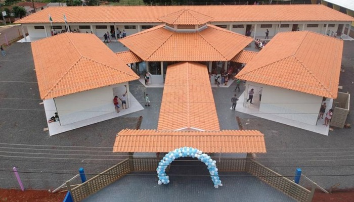

 Horário de Visitas Das 18h até 8h
Horário de Visitas Das 18h até 8h
 Atendemos Fim de Semana
Atendemos Fim de Semana
Lar das Meninas
Presta assitência a crianças de 03 a 17 anos, que se encontre em situação de risco e/ou vulnerabilidade social.
Instruções para Visitas
Venha Quando sentir Vontade e Traga Muito amor e Paciência para Dar
Horário de Visitas Das 18h até 8h
Atendemos Fim de Semana